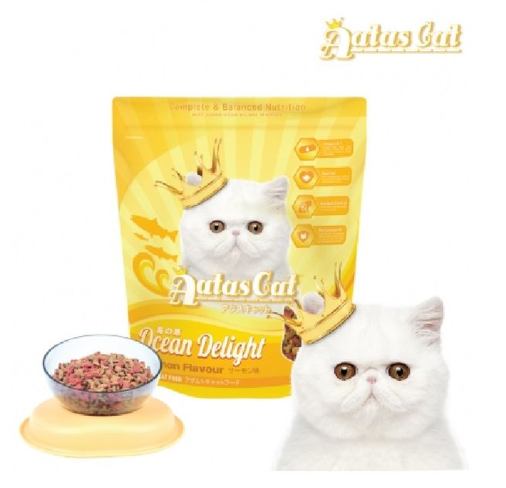
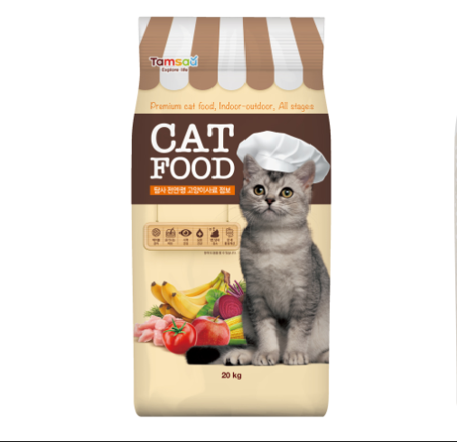
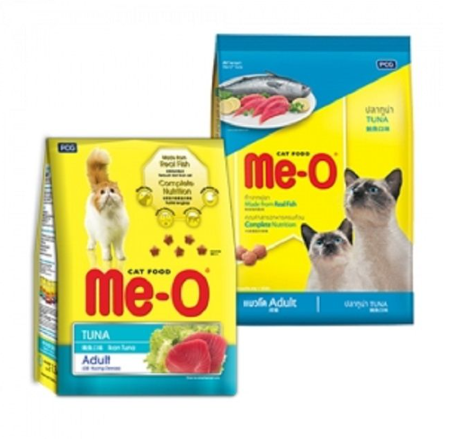

성인묘용 고등어맛

원산지
한국
제조사/수입사
대한사료(주)
유통기한
유통기한 18개월
본 상품에 표기된 날짜는 제조일자 입니다.
일자는 년/월/일으로 표기 되어 있습니다. 예) 2017.01.05 →2017년 1월 5일
권장연령
10개월 이상
용량/중량
6.5kg
원료구성
생연어, 생닭고기, 닭고기분, 타피오카, 고구마분말, 셀룰로스파우더, 아마종실, 치킨오일, 효모, 식염, 건조효소분해계육분, 타우린, 비타민C, 비타민E, 메치오닌, 엘라이신, 염화콜린, 유기태미네랄, 비타민&미네랄 프리믹스 유카추출물, 포도씨추출물, 생균제, 효소제, 프로바이오틱스, 허브제 등
성분구성
조단백 33%이상, 조지방 16%이상, 칼슘 0.95%이상, 인 1.8%이하, 조섬유 7%이하, 조회분 9%이하, 조수분 12%이하
가정묘용 헤어볼관리

원산지
한국
제조사/수입사
Royal Canin, SA.
유통기한
유통기한 18개월
본 상품에 표기된 날짜는 유통기한 입니다.
일자는 일/월/년으로 표기 되어 있습니다. 예) 01.05.2017 →2017년 5월 1일
권장연령
1세 이상
용량/중량
4kg
원료구성
탈수 가금육, 쌀, 밀, 마이즈, 식물성 단백질 분리물, 동물성 지방, 가수분해 동물 단백질, 밀 분말, 식물성 식이섬유, 사탕무 과육, 효모, 콩 오일, 미네랄, 프럭토 올리고당, 생선 오일, 차전자피와 씨
성분구성
조단백 25% 이상, 조지방 11% 이상, 칼슘 0.88% 이상, 인 0.64% 이상, 조섬유 5.0% 이하, 조회분 8.0% 이하, 수분 7% 이하
가정묘용 체중관리

원산지
미국
제조사/수입사
Natural Balance Pet Foods, Inc./내추럴발란스코리아
유통기한
유통기한 18개월
권장연령
12개월 이상
용량/중량
3kg
원료구성
닭고기육분, 현미, 닭고기, 귀리, 연어육분, 귀리섬유질, 완두섬유질, 천연향료, 알파파가루, 닭고기지방, 계란, 감자, 감자단백질, 연어오일, 아마씨가루, 맥주효모, 당근포마스, 소금, 셀러리와 사과즙섬유질, 이눌린, 비타민합제(비타민C, E), 타우린, DL-메티오닌, 사탕무포마스, 유카시디게라추출물, 미량광물질류합제(칼슘, 인), L-카르니틴, 혼합토코페롤, 다시마가루, 크랜베리, 파슬리플레이크, L-라이신, 시금치, 물냉이포마스, 로즈마리추출물
성분구성
조단백질 29.0% 이상, 조지방 13.0% 이상, 칼슘 0.8% 이상, 인 0.8% 이상, 조섬유 9.0% 이하, 조회분 8.0% 이하, 수분 10.0% 이하